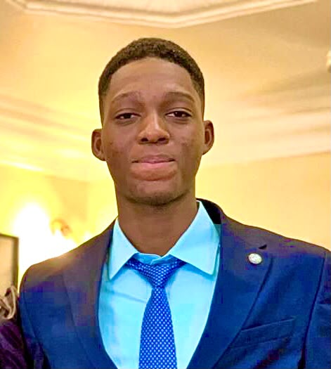
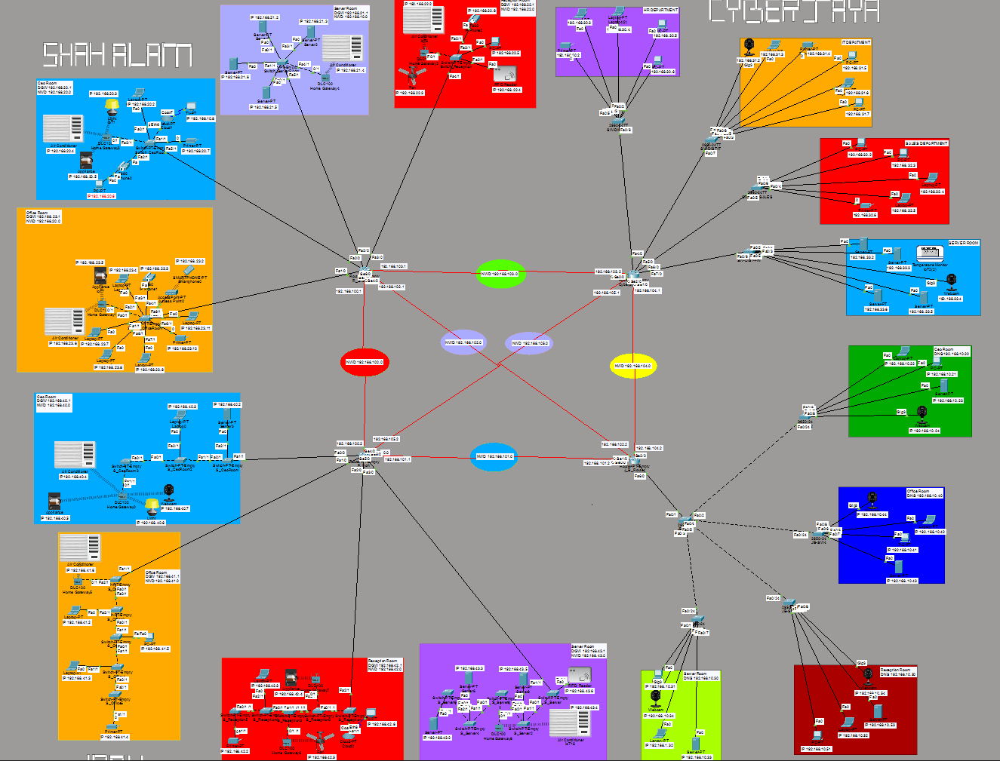
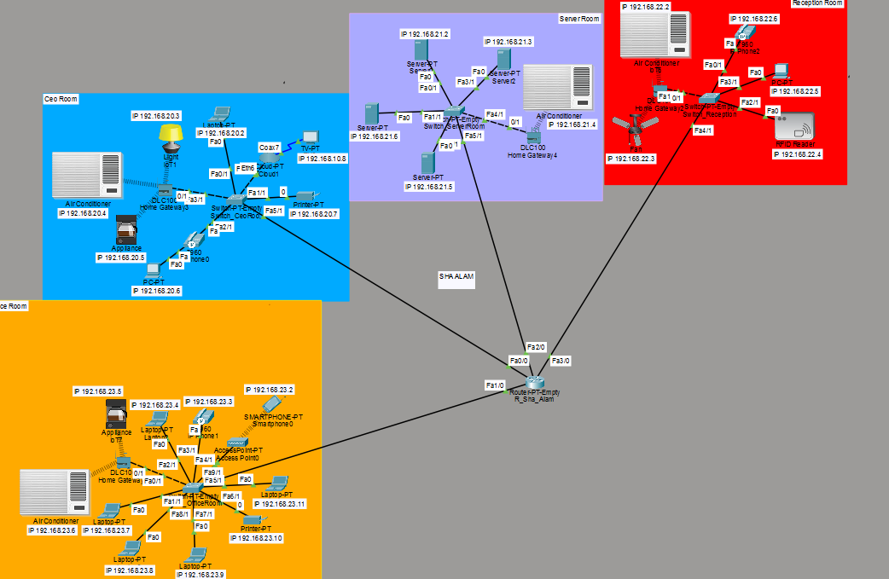

Engineer in the making, from Mali to Malaysia. Building a foundation in systems, networks, and security — while keeping an eye on the entrepreneurial side of technology.
I'm a Computer Engineering (Honours) student at Asia Pacific University of Technology & Innovation (APU) in Malaysia, originally from Mali. I'm building a strong foundation in systems programming, computer networks, and cybersecurity.
Studying abroad has pushed me to adapt fast, stay disciplined, and learn independently — qualities I bring to every project I take on. I'm curious by nature, constantly experimenting with new tools and tackling problems from first principles.
Beyond the technical track, I'm drawn to business and entrepreneurship. I'm interested in how engineering skills can be turned into solutions that create real value — not just for systems, but for businesses and communities.
My goal is to become a highly skilled computer engineer with expertise in software systems, cybersecurity, and emerging technologies — continuously improving, and eventually building things that matter.
Asia Pacific University of Technology & Innovation (APU), Malaysia. A 4-year programme covering systems programming, computer networks, operating systems, and cybersecurity fundamentals.
Built core programming skills in C and Python, introduced to data structures, networking basics, and Linux environments.
Moving into more advanced systems, networking, and security coursework, alongside continued personal projects.

Designed and simulated a nationwide enterprise network in Cisco Packet Tracer for a fictional company operating across four Malaysian cities (Shah Alam, Ipoh, Cyberjaya, Johor Bahru). The network combines star, bus, and extended star topologies at branch level, with structured IP addressing (FLSM and VLSM), VLAN segmentation, and a hybrid ring/partial-mesh WAN linking all branches. Routing was implemented with OSPF (single area) so all branches exchange routes dynamically, with full IoT integration (smart devices, sensors, cameras) per branch.

A closer look at the Shah Alam branch I designed within the NetVerse Dynamics network above: a star topology connecting the CEO Room, Server Room, Reception Room, and Office Room to a central router, each on its own /24 subnet (192.168.20.x – 192.168.23.x). The design integrates IoT devices (smart AC, lighting, RFID readers, smart appliances) through home gateways and access points alongside traditional PCs, laptops, printers, and servers.
A console-based hospital management system developed in C. The system handles patient records, admissions, and core hospital workflows — demonstrating proficiency with low-level memory management, structs, and file I/O.
A simple authentication API built with Flask, using bcrypt for secure password hashing and SQLite for lightweight data storage. Covers core concepts behind user registration, login, and credential security in web backends.
Regular strength training, with a growing focus on cardio and overall conditioning.
Working on leadership, confidence, and charisma — discipline off-screen feeds discipline on-screen.
Always thinking about how technical skills can translate into real-world value and business opportunities.
Open to internship opportunities, collaborations, and connecting with other engineers. Don't hesitate to reach out!